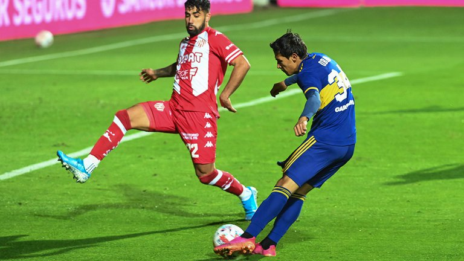
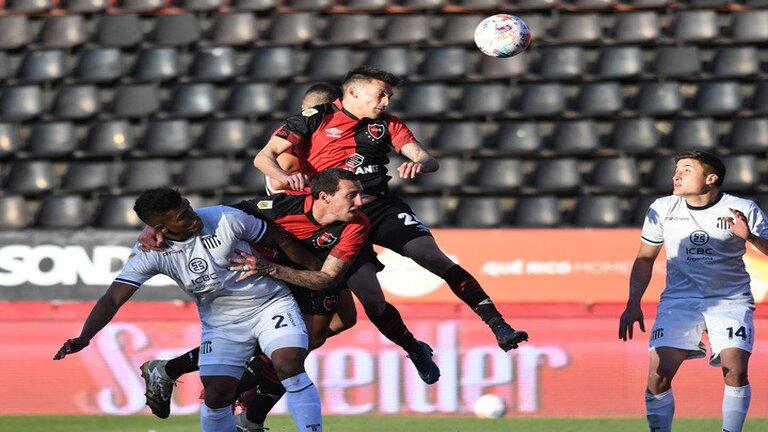
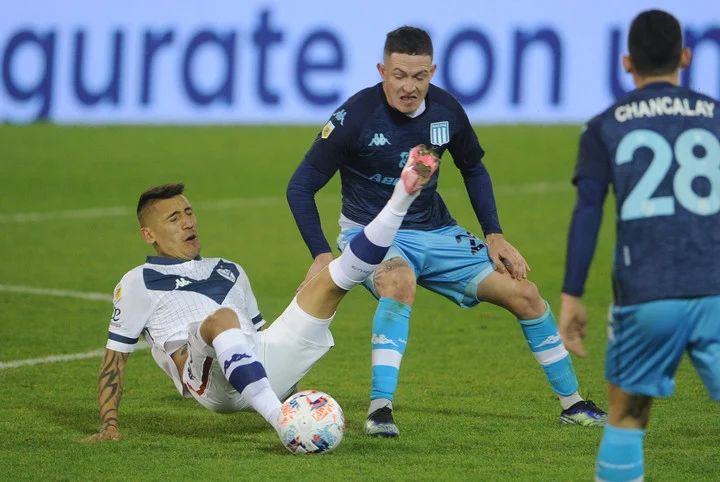
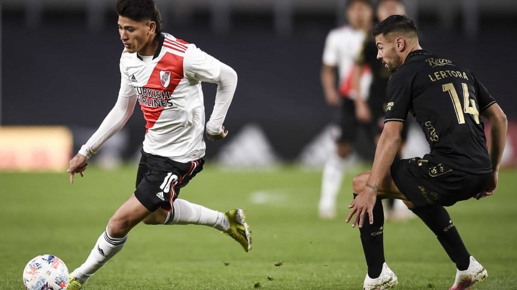
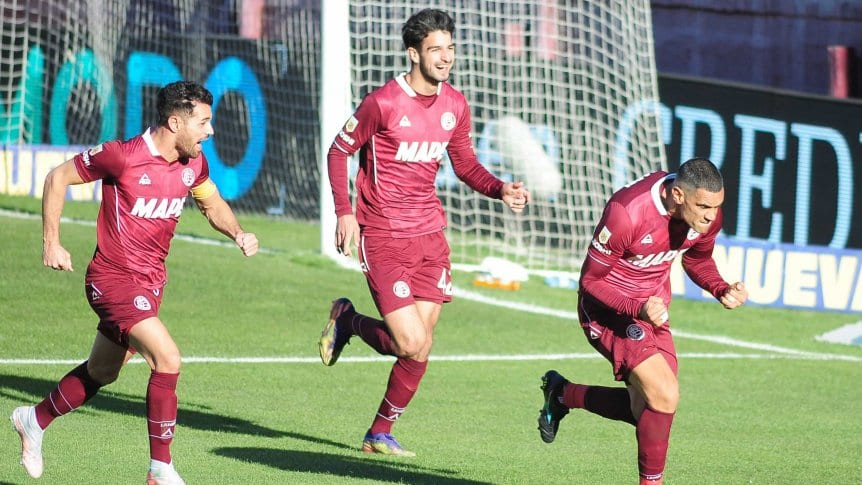
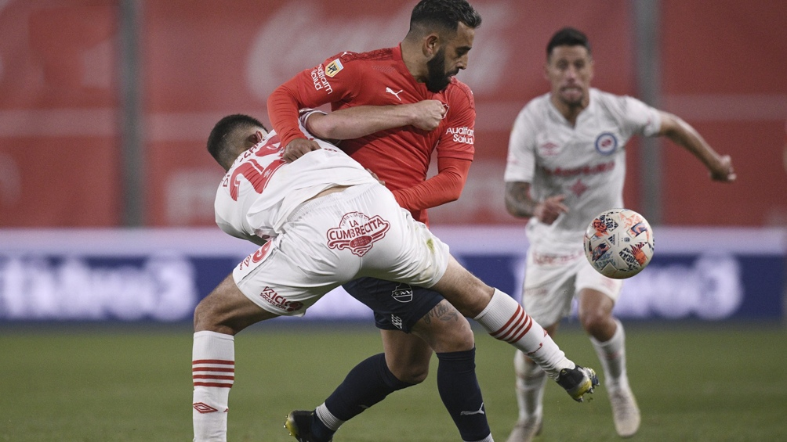

Boca con un equipo alternativo, comenzó ganando pero en el segundo tiempo jugó mal, Unión aprovechó y lo empató al final. El equipo de Miguel Russo se puso en ventaja rapidamente a los 10 minutos del primer tiempo, pero el Tatengue fue rapidamente a buscar la igualdad. En el segundo tiempo, Boca hizo poco , y Unión mereció el empate mucho antes, pero logró igualar el marcador al minuto 35 del complemento.
NOTICIAS DEL DÍA
Empate con sabor amargo

Newells dió vuelta el partido a la "T" en un partido electrizante

Talleres comenzó ganando el partido con una diferencia de dos goles, pero la pelota parada le dolió y terminó perdiendo el partido. El equipo cordobés se puso en ventaja con gol de Michael Santos al minuto 27 de la primer etapa, mientras que Carlos Auzqui le dio el segundo gol sobre el cierre de la primer etapa. En el segundo tiempo, la "lepra" fue superior y en el minuto 61 del complemento, Gabriel Compagnucci anotó de cabeza el 2 a 1 parcial, 14 minutos mas tarde, Juan Garro, tambien de cabeza, pone el 2 a 2. Finalmente en el minuto 78 del segundo tiempo, Jonathan Cristaldo pone el 3 a 2 definitivo. En el minuto 94, Ignacio Scocco, vio la segunda tarjeta amarilla y se fue expulsado.
Velez y Racing no se sacaron ventaja en el Amalfitani

En un partido con pocas emociones, el "Fortin" y la "Academia" no se sacaron ventajas, dejando el marcador en cero. A pesar de eso, el técnico de Racing, Juan Pizzi dijo que su equipo generó mas situaciones y que "les faltó puntería". El conjunto de Avellaneda, dejo una cara preocupante de cara a la revancha de los octavos de final de la Libertadores la proxima semana.
River no estuvo "fino" y el último campeón no perdonó

En el estadio Monumental el equipo del muñeco tuvo buenos ataques, pero muchos problemas defensivos. Aliendro al minuto 2 del comienzo del partido, convirtió el 1 a 0 parcial a favor del "sabalero", 5 minutos mas tarde, Gonzalo Piovi vió la tarjeta roja. A pesar de la superioridad numérica, el equipo de Gallardo no supo aprovechar las situaciones y Colon logró meter el segundo gol en el minuto 33 de la primera parte. En el segundo tiempo, River pudo descontar en el minuto 90 con gol de Matias Suarez, pero no alcanzó. El último campeón del futbol argentino, comenzó con el pie derecho.
Lanús, con un Sand imparable, venció a Atlético Tucumán

Con dos goles del Pepe Sand, uno de López y otro de Malcorra, el Granate superó 4-2 al Decano en el debut. Heredia y Carrera marcaron para la visita. En un primer tiempo lleno de acción, el pepe Sand, convirtió el 1 a 0 a los 25 minutos desde los 12 pasos. Sin embargo la alegria del "granate" duró poco, ya que a los 34 minutos Heredia le dió el empate al "decano". Cuando todo parecia que el primer tiempo terminaba en empate, Lopez anoto el 2 a 1 para el equipo de Zubeldía. Ya en el segundo tiempo, la felicidad de Lanús iba a crecer ya que al minuto Sand aumentaba la diferencia, aunque mas tarde, Carrera volvia a poner en partido al decano, pero esto no iba a ser suficiente porque ya en los minutos adicionados, Malcorra liquidó el encuentro.
Independiente y Argentinos, sin goles en un partido con escasas emociones

El Rojo y el Bicho, con un equipo alternativo debido a la revancha ante River por la Copa Libertadores, no se sacaron ventaja y empataron 0 a 0, en el estadio Libertadores de América. A pesar de que el equipo visitante tuvo la primera situación de gol, el local fue el que tomó el protagonismo y se mostró mas determinante en ataque, de la mano de Alan Velasco que exigió en tres oportunidades las intervenciones destacadas de Chaves. Ya en el segundo tiempo el partido no cambió mucho, Independiente atacaba y Chaves seguía manteniendo el arco en cero, y asi es como finalizó el partido sin goles para ambos equipos.